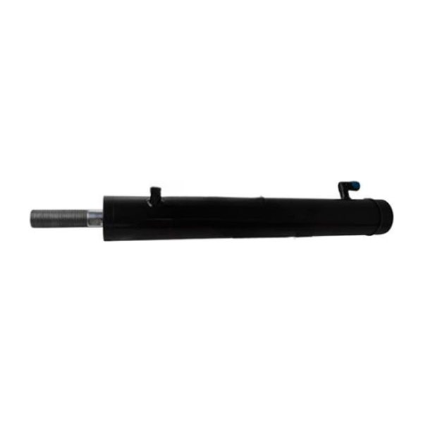

Available
Email for a quote
Mitsubishi 37106-301 Power Steering Cylinder
| OEM part number | 37106-301 |
| Fits | Mitsubishi |
| Models / notes | FD20/25-F18B FG20/25-F17B |
| Category | Steering |
| Type | Aftermarket replacement |
Send us the quantity you need and we'll reply with pricing, usually within 24 hours. Not the exact part? We can source it. Send the part number or a photo.